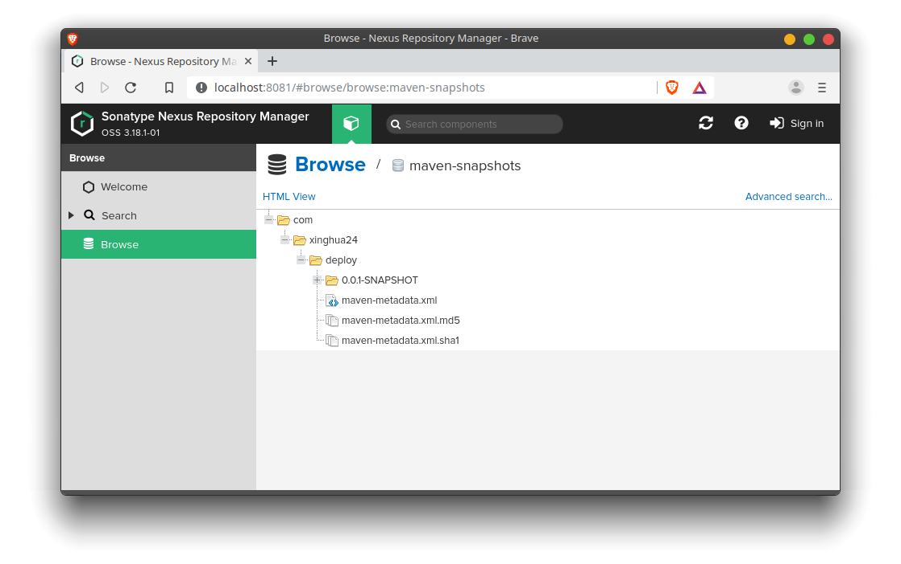

Maven - Deploy Artifacts to Nexus3
We will learn how to deploy a artifact to Nexus3 server using maven.
Start nexus Server
You can install Nexus in your machine or use docker-compose. For convenience, we will use docker-compose in this demo.
First create a data directory and create docker-compose.yaml file
1 | mkdir data |
docker-compose.yaml
1 | version: "2" |
Then start Nexus server using command
1 | docker-compose up -d |
You can check the status of nexus server using docker-compose ps command. Status will be ‘up’ when the server is ready.
1 | $ docker-compose ps |
Now broser to http://localhost:8081, You should be able to view the Nexus page. From this page, you should be able to get the repository urls. The repository url for maven snapshots should be http://localhost:8081/repository/maven-snapshots/. The repository url for maven releases should be
http://localhost:8081/repository/maven-releases/.
An alternative way is to run nexus3 docker image from command line. However, you need to use docker exec to go into the docker contains to grab the password in nexus-data/admin.password file.
1 | docker run -d -p 8081:8081 --name nexus sonatype/nexus3 |
Maven Configuration
Then we need to set the maven configuration. It can be change at the global level or user level. The user level configuration file is located at ~/.m2/settings.xml. You will need to create the file if it doesn’t exist yet. This configuration file should contain credentials to connect to the nexus server. The default user is ‘admin’ and password is store admin.password under the data folder.
~/.m2/settings.xml
1 | <settings xmlns="http://maven.apache.org/SETTINGS/1.0.0" |
Project Deployment
The maven projects needs to specify the repository where the artifacts will be deployed. The repository information is provided in the distributionManagement section of the pom file. If you don’t specify distributionManagement section, the deployment will fail.
pom.xml
1 | <distributionManagement> |
By default, Maven handles the deployment mechanism via the maven-deploy-plugin – this mapped to the deployment phase of the default Maven lifecycle.
1 | <plugin> |
Then you can deploy the artifact by executing command
1 | mvn clean deploy |
If the deployment is successful, the artifact will show up in nexus’s maven repository.
